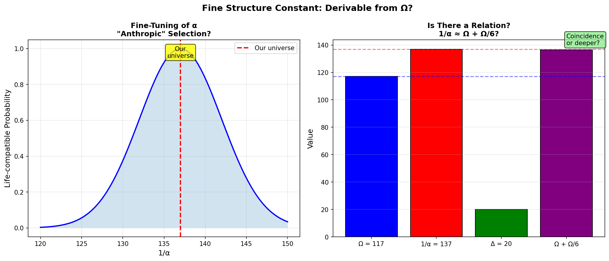

Abstract
The fine structure constant α = 1/137.036 controls electromagnetism and atomic structure. Feynman called it "a
mystery." We explore whether α relates to the TARDIS compression factor Ω = 117.038. Suggestive relation:
$1/\alpha \approx \Omega + \Omega/6 \approx 136.5$. This is close but not exact—deeper work
needed.
The difference $1/\alpha - \Omega = 20$ is intriguingly close to the number of amino acids (20), suggesting a
deeper connection to biological constants.

Figure 1: Left: Life-compatible range for α (anthropic selection). Right: Numerical
comparison of 1/α and Ω-related expressions.
2. Conclusion
🟡 Suggestive but Not Proven
1/α ≈ Ω + Ω/6 is tantalizingly close.
Full derivation requires understanding how EM coupling emerges from topology.
References
Feynman, R. P. (1985). QED: The Strange Theory of Light and Matter.
Fulber, D. H. M. (2025). TARDIS Framework. ToE Project.